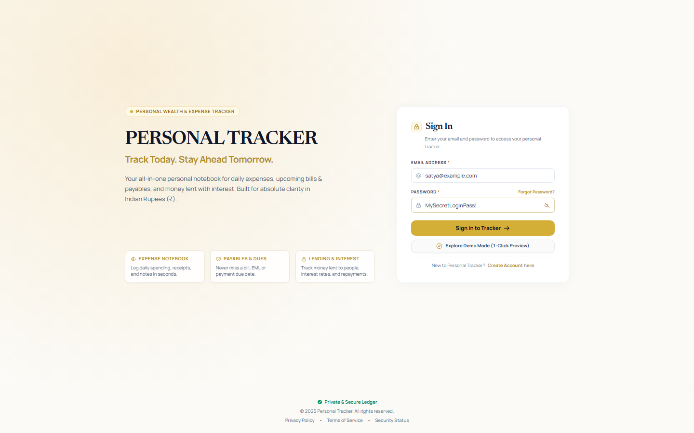
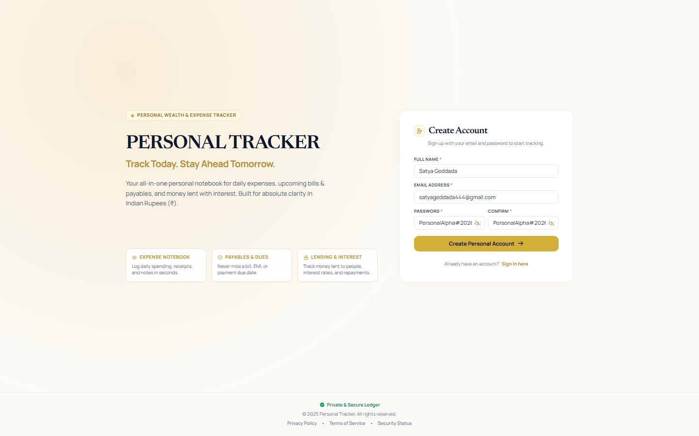
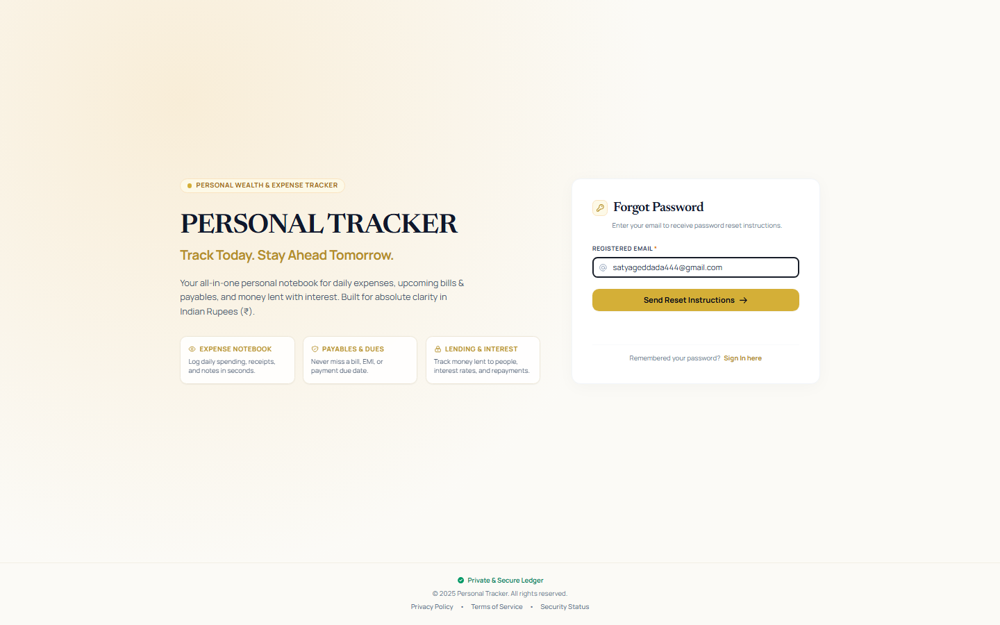
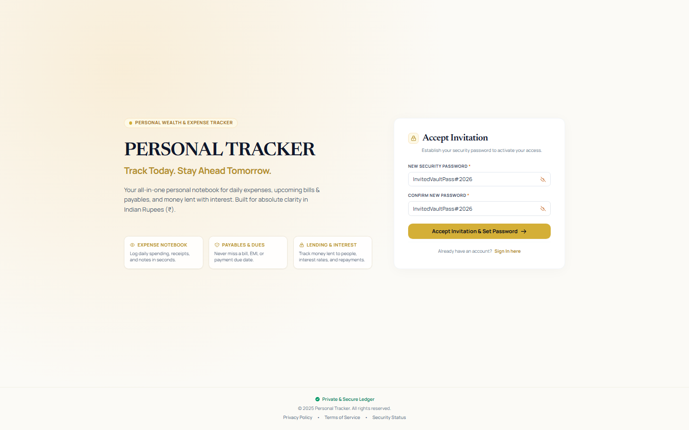

Comprehensive Password Visibility Eye Toggles Across All Authentication Views
Integrated interactive visibility toggle controls (with masked/unmasked password states) across Sign In, Create Account (Register), Reset Password, Accept Invitation, and verified Forgot Password workflows.
Dual Independent States
Separate showPassword and showConfirmPassword states ensure the user can inspect either field without leaking the other.
Pixel-Perfect SVG Icons
Embedded stroke-based SVGs for open-eye and slash-eye with amber highlight (text-amber-700) match the luxury gold aesthetics.
Non-Colliding Input Padding
Right padding adjusted to pr-8 and pr-9 so typed passwords never collide or overlap with the toggle icon.
1. Rationale & Technical Necessity
During authentication, account creation, or credential recovery, users frequently mis-type complex security passwords or suffer mismatch errors between Password and Confirm. Without an eye toggle icon, the user has no way to audit their input without deleting and re-typing the entire string.
With this update:
- Sign In Form (/login): Has eye toggle on password field.
- Create Account Form (/register): Has eye toggles on BOTH Password and Confirm Password.
- Forgot Password Form (/forgot-password): Clean single-field email dispatch flow.
- Reset Password Form (/reset-password): Has eye toggles on BOTH New Security Password and Confirm.
- Accept Invitation Form (/accept-invite): Has eye toggles on BOTH New Password and Confirm.
2. Verified Screenshots Across All 5 Authentication Views



